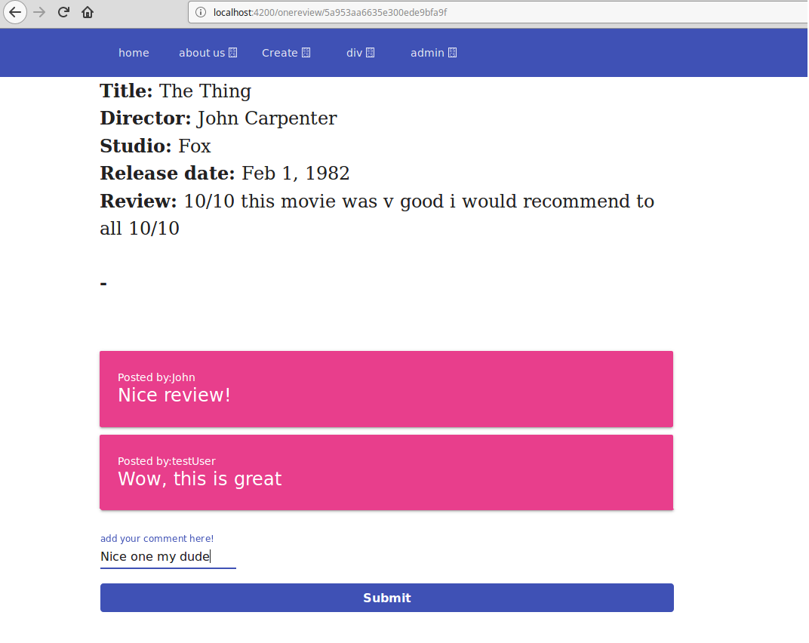
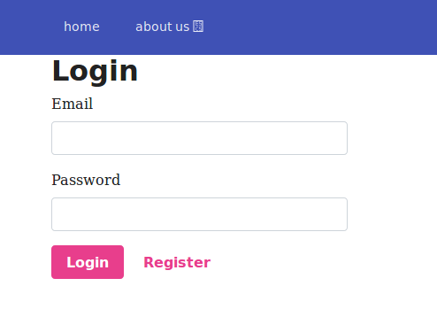
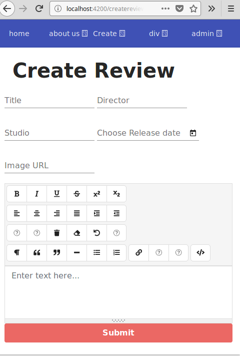

Kino Reviews
2017 API / Server-side project
  
The Project
- *Technologies used: mongodb, mongoose, express, angular-cli, winston, mocha, node.js
- * After creating an account users are able to browse the public reviews page which will show all the film reviews in the database
- *User details were stored in mongo database, passwords were hashed using BCRYPT
- *REST API created using express.js - front end created with Angular CLI
- * Distinction between admin and regular users - admins can delete any reviews in the database. Have access to a page where they can demote users to read-only